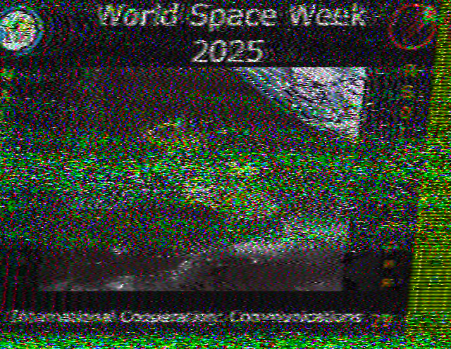
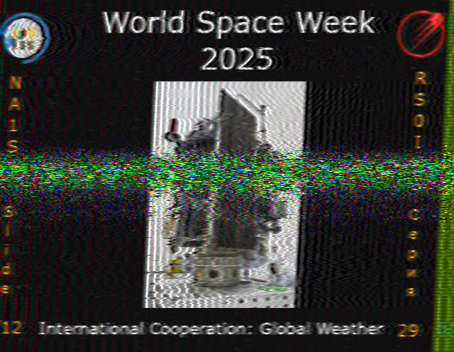
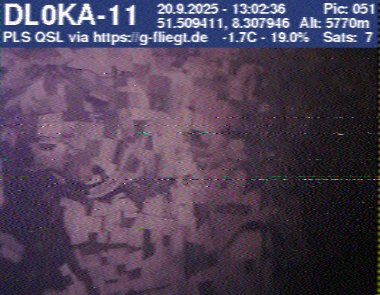

SSTV/SSDV-Empfänge
SSTV (Slow Scan Television) ermöglicht die übertragung von Standbildern über Funk.
SSDV (Digital SSTV) ist die digitale Weiterentwicklung und erlaubt die übertragung von hochauflösenden HD-Bildern über Funk.
SSDV-Stratosphärenballon – Juli 2026
Nach den erfolgreichen SSTV-Experimenten im September 2025 ging es im Juli 2026 in die nächste Runde – diesmal mit SSDV von einem Stratosphärenballon.
Die empfangenen Bilder und weitere Details gibt es auf G-Fliegt oder live auf HabHub.

#00
#00
#00
#00
World Space Week – Oktober 2025
Empfangene SSTV-Bilder von der ISS während eines Aktivzeitraums im Oktober 2025. Die Bilder wurden mit einem Handfunkgerät und entsprechender Software dekodiert.

ISS SSTV Bild 4 von 12

ISS SSTV Bild 5 von 12

ISS SSTV Bild 6 von 12
Stratosphärenballon SSTV – September 2025
Im September 2025 habe ich SSTV-Bilder von einem Amateurfunk-Stratosphärenballon
empfangen. Die Bilder wurden während des Fluges in der Stratosphäre
aufgenommen und per Funk zur Erde gesendet.
Weitere Infos zu Amateurfunk-Stratosphärenballons und deren SSTV-übertragungen findest du auf G-Fliegt.

#009

#048

#049

#050
